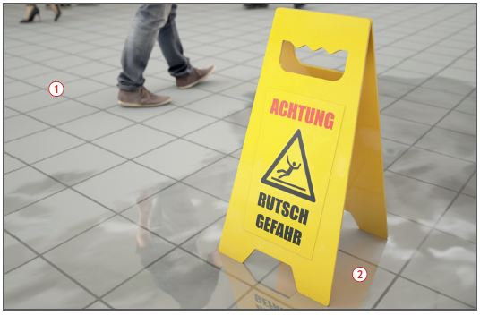
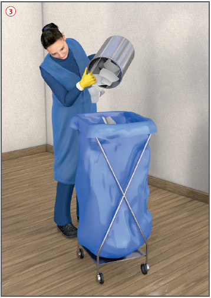

Gefährdungen
- Bei Gebäudeinnenreinigungen besteht die Gefahr des Ausrutschens auf nassen oder seifigen Untergründen.
Allgemeines
- Beschäftigte vor der ersten Arbeitsaufnahme objektbezogen und im Hinblick auf das anzuwendende Arbeitsverfahren gemäß der Gefährdungsbeurteilung unterweisen. Unterweisung mindestens einmal jährlich wiederholen.
- Ausländische Beschäftigte gegebenenfalls in ihrer Landessprache unterweisen.
- Im Objekt einsatzbereite Telefone ausweisen. Rufnummern von Feuerwehr, Notarzt, Rettungsdienst und Polizei deutlich sichtbar angeben.
- Während der Betriebsruhe des auftraggebenden Betriebes Funktionsfähigkeit von Aufzügen, automatisch öffnenden Türen, Beleuchtungssteuerung usw. vereinbaren.
- Beschäftigte verpflichten, nur Anweisungen von betrieblichen Vorgesetzten entgegenzunehmen.
Schutzmaßnahmen
- Glattböden nur abschnittsweise bearbeiten
 . Nicht durch die Reinigungsflotte laufen. Bearbeitete Flächen erst nach Absaugen oder Abtrocknen des Flüssigkeitsfilmes betreten.
. Nicht durch die Reinigungsflotte laufen. Bearbeitete Flächen erst nach Absaugen oder Abtrocknen des Flüssigkeitsfilmes betreten.
- Bei Publikumsverkehr Verkehrswege von den Arbeitsbereichen trennen.
- Warnschilder aufstellen
 .
.
- Während der Arbeit flachen, fersenumschließenden und flüssigkeitsdichten Fußschutz mit rutschhemmender Sohle tragen.
- Vor Ort testen, ob ausreichend Rutschhemmung gegeben ist.
- Bei Nassreinigung gegebenenfalls wasserdichte Schutzkleidung benutzen, z. B. Handschuhe, Schürze, Anzüge, Stiefel, Gesichtsschutz.
- Hautschutz beachten: Vor der Arbeit gezielter Hautschutz, nach der Arbeit und vor Pausen Hautreinigung und nach der Reinigung rückfettende Hautpflege.
- Möglichst ohne Leitern und mit Arbeitsstiel vom Boden arbeiten oder leichte Plattformleitern verwenden. Lange Transportwege vermeiden.
- Nicht auf Stühle und anderes Mobiliar steigen.
- Herde, Öfen und Grills rechtzeitig vor Beginn der Reinigungsarbeiten abschalten und Abkühlen abwarten.
Abfallbeseitigung
- Beim Entleeren der Abfallbehälter und Papierkörbe nicht hineingreifen. Behältnisse ausschütten bzw. mit der Einwegtüte entnehmen
 .
.
- Transporthilfen verwenden.

Baureinigung
- Werden im Objekt noch Bauarbeiten ausgeführt, Reinigungsarbeiten nur in Absprache mit dem koordinierenden Bauleiter vornehmen.
- Besteht die Gefahr von Fußverletzungen, sind Sicherheitsschuhe (Kennzeichnung S 3) zur Verfügung zu stellen und von den Beschäftigten zu tragen.
- Staubentwicklung durch Saugen, Anfeuchten oder andere Verfahren vermeiden. Nicht trocken fegen.
- Gegebenenfalls Atemschutz FFP2 benutzen.
Rutschhemmung von Fußböden
- In Arbeitsräumen und -bereichen mit Rutschgefahr müssen rutschhemmende Bodenbeläge eingesetzt werden.
- Bei der Auswahl der Reinigungs- und Pflegemittel und bei deren Dosierung darauf achten, dass die Rutschhemmung nicht gemindert wird.
- Beim Einsatz von Wischpflegemitteln mit rutschhemmenden Eigenschaften Bodenbelag nicht nachpolieren.
- Dosierangaben des Herstellers genau beachten.
- Bodenbeläge regelmäßig auf optisch erkennbare Schäden untersuchen.
Anforderungen an die Rutschhemmung von Fußböden ASR A 1.5/1,2 Anhang 2
- Der Anhang beschränkt sich auf solche Arbeitsräume, Arbeitsbereiche und betriebliche Verkehrswege, deren Fußböden mit gleitfördernden Medien in Kontakt kommen, wo also die Gefahr des Ausrutschens zu vermuten ist.
Arbeitsmedizinische Vorsorge
- Arbeitsmedizinische Vorsorge nach Ergebnis der Gefährdungsbeurteilung veranlassen (Pflichtvorsorge) oder anbieten (Angebotsvorsorge). Hierzu Beratung durch den Betriebsarzt.
07/2021